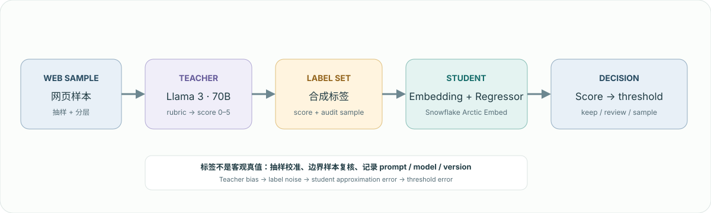
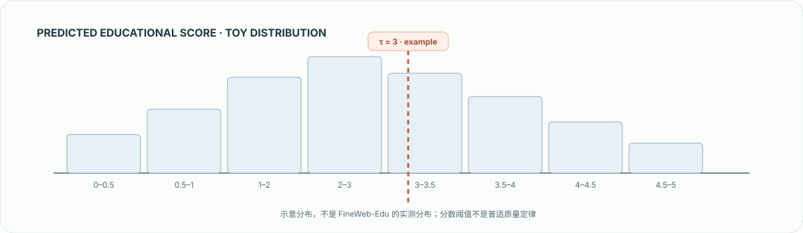

MODULE 11 / LLM DATA ENGINEERING
教育质量分类器
理解 FineWeb-Edu 如何通过 LLM 合成标签训练教育质量回归器，以及阈值、偏差与下游评估。
困惑度告诉我们文本“像不像某个参考语料”，但它不直接回答“这段内容能不能教会模型东西”。教育质量分类器试图学习一个明确的目标构念：文本是否提供可理解、可迁移的知识，而不是单纯像百科或学术论文。
先定义被预测的是什么：教育价值，不是通用质量
“高质量”不是一个天然存在的单一标签。FineWeb-Edu 选择的目标更窄：网页对学习者是否有教育价值。一个清晰的维修教程可能很有教育价值，但未必像论文；一段学术摘要可能专业，却不一定适合其设定的基础教育取向。
因此必须区分三个对象：
- 构念（construct）：教育价值的操作性定义，例如知识解释、概念组织、推理过程和可学习性。
- 标签（label）：某个标注协议或教师模型对样本给出的分数；它是构念的测量结果，不是构念本身。
- 决策（decision）：数据团队根据分数、阈值、来源配额和下游目标决定是否保留。
FineWeb-Edu：Teacher → Labels → Student → Filter

第一步：构建教师标签
FineWeb-Edu 数据集说明记录：使用 Llama 3 70B Instruct 对 500,000 个 FineWeb 样本按 0–5 分标注教育价值，并围绕小学和初中知识设计评分焦点，避免模型把“技术术语密集”直接等同于“更有教育价值”。这是一项任务定义，不是跨所有学科和年龄段的通用教育量表。
第二步：训练学生回归器
公开模型卡说明，训练集包含 450,000 条 Llama 3 标注样本；模型以 Snowflake Arctic Embed 为底座，增加单一回归头。模型卡描述冻结 encoder / embedding 层、训练回归头 20 个 epoch，学习率为 3×10−4。这说明学生模型学习的是教师分数的近似，而不是直接学习人类真值。
第三步：从分数到决策
模型输出连续分数 ，数据流水线再应用阈值 。筛选策略是产品决策，不能把它混写成模型本身的能力。

如何读懂模型卡：82% F1 不等于分数完全准确
FineWeb-Edu 模型卡报告：把回归输出按 3 分阈值转成二分类后，F1 为 82%。但同一模型卡的留出集报告包含 46,867 条样本、整体 accuracy 约 0.71；分数 3 这一阈值边界类的 F1 约 0.53，分数 5 类的 F1 约 0.02。不同指标回答不同问题，不能只摘一个总体 F1 就宣称“分数预测准确”。
| 指标 / 事实 | 公开记录 | 正确解释 |
|---|---|---|
| Teacher annotations | 500k 样本，0–5 分 | 数据集说明中的标注规模 |
| Student training | 450k 训练样本 | 模型卡训练集规模，不与标注池混为一谈 |
| Binary F1 | 82%，阈值 3 | 把回归分数切成 keep / drop 后的指标 |
| Hold-out accuracy | 约 0.71 | 不能替代分数级误差与分层评估 |
| Class 3 F1 | 约 0.53 | 阈值边界附近是高风险区域 |
数据集说明还报告：阈值 3 在其消融中总体表现较好；阈值更高会提升部分知识与推理密集型基准，却明显损害 HellaSwag 和 PIQA。阈值 3 版本保留约 1.3T tokens，阈值 2 版本保留约 5.4T tokens。它们是论文/数据集特定的实验结果，不是任何项目都应采用的默认阈值。
推理代码：保留连续分数与离散决策两份信息
import torch
from transformers import AutoTokenizer, AutoModelForSequenceClassification
model_id = "HuggingFaceFW/fineweb-edu-classifier"
tokenizer = AutoTokenizer.from_pretrained(model_id)
model = AutoModelForSequenceClassification.from_pretrained(model_id)
model.eval()
texts = [
"A step-by-step explanation of how fractions work...",
"Buy now! Best price! Click here! Limited offer..."
]
batch = tokenizer(texts, padding=True, truncation=True, return_tensors="pt")
with torch.inference_mode():
raw = model(**batch).logits.squeeze(-1)
scores = raw.float().tolist() # continuous regression scores
integer_scores = raw.round().clamp(0, 5).int() # model-card convention
keep = integer_scores >= 3 # project policy, not model lawraw_score、integer_score、threshold_version、model_revision、input_truncation 和决策原因。只保存 keep/drop 会让未来无法重算阈值。交互练习：阈值变化会保留多少样本？
以下六条记录是合成教学数据，只用于理解阈值，不代表 FineWeb-Edu 的真实样本或分数分布。
失败模式：学生模型会放大教师的盲区
- 构念偏差：把教育价值误定义成正式语体、长篇幅或引用数量，会系统性压低口语解释、实践经验和低资源语言内容。
- 边界不确定：模型卡中阈值边界类表现弱，生产系统应对阈值附近样本进行人工抽检或灰度保留。
- 分布外泛化：模型卡明确提醒，训练数据以英语网页为主，面向小学/中学教育取向；专业高等教育或不同来源的效果可能变化。
- 截断与长文：分类器只看到模型输入窗口中的文本；长文的关键知识若位于截断部分，评分可能失真。
- 数据目标错位：教育价值筛选不等于代码、对话、安全、事实性或多样性的全面质量评估。
参考资料
- HuggingFaceFW, FineWeb-Edu Dataset Card，Annotation、Classifier training、Filtering and results。
- HuggingFaceFW, FineWeb-Edu Classifier Model Card，模型结构、训练配置、留出集分类报告与限制。
- Penedo et al. (2024), The FineWeb Datasets: Decanting the Web for the Finest Text Data at Scale，数据集构建背景。
- Yuan et al., WizardLM: Empowering Large Language Models to Follow Complex Instructions，FineWeb-Edu 标注说明引用的 additive scale 研究锚点。